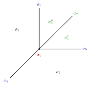

Example 12.1.4. Let $\Sigma $ be the fan shown in 12.3.

Comparing with our previous example 12.1, we have divided $\sigma _1$ from the middle, giving rise to two additional $2$-dimensional cones $\sigma _1'$ and $\sigma _1''$, and one additional $1$-dimensional cone $\sigma _7$.
The corresponding $X=\mathrm{Bl}_0 \mathbb {P}^2$ is just the blow-up of $\mathbb {P}^2$ at the origin $0=[1:0:0]$ and hence $L=\pi ^*\mathcal{O}_{\mathbb {P}^2}(1)$. Let $\pi \colon X\rightarrow \mathbb {P}^2$ denote the blow-up morphism. Let
Then $D$ is the pull-back of the divisor $D$ in example 12.1.3. Note that $D$ is not ample, since it has degree $0$ on the exceptional divisor.
In this case, we have
and $D_{\sigma _7}$ is just the exceptional divisor.
The corresponding ray generators are
while
Therefore, $P_ D$ is the same as in 12.2.
We also observe that